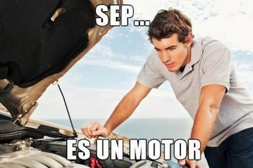

No cometas errores a la hora de ir a adquirir un vehiculo. Segui los siguientes consejos:

- Investiga: Antes de ver un auto en persona, investiga sobre el modelo y año del auto que quieres comprar. Busca reseñas, opiniones y precios de mercado para que tengas una idea del valor del auto y de los problemas comunes que podrían tener.
- Haz una lista de verificación: Antes de ir a ver el auto, haz una lista de verificación de los puntos importantes que debes revisar, como el estado de la carrocería, los neumáticos, los frenos, el motor, la transmisión, la suspensión, el sistema eléctrico, etc.
- Comprueba el exterior: Revisa cuidadosamente el exterior del auto en busca de abolladuras, raspaduras, óxido, grietas en el parabrisas, luces rotas, etc. También asegúrate de que todas las puertas, capó y maletero se abran y cierren correctamente.
- Revisa el interior: Verifica el interior del auto en busca de raspaduras, manchas, olores extraños, desgaste excesivo en los asientos, pedales y volante, etc. Asegúrate de que los sistemas de ventilación, aire acondicionado, calefacción y radio funcionen correctamente.
- Haz una prueba de manejo: Pídele al dueño del auto que te permita hacer una prueba de manejo. Maneja en diferentes condiciones, como en la ciudad, en la carretera y en la autopista, y presta atención a cómo se siente el auto y cómo se comporta.
- Revisa los papeles: Asegúrate de revisar los papeles del auto, como la tarjeta de circulación, el seguro, el historial de mantenimiento y cualquier otro documento relevante. Si algo no parece estar en orden, pregunta al dueño del auto para obtener una explicación.
- Busca ayuda: Si no te sientes seguro revisando el auto por ti mismo, busca la ayuda de un mecánico de confianza para que te acompañe y revise el auto contigo.
- Haz una oferta: Si después de revisar el auto estás interesado en comprarlo, haz una oferta razonable basada en la investigación que hayas hecho y en el estado del auto.
Espero que estos consejos te sean útiles. No olvides tomar tu tiempo y ser cuidadoso antes de hacer una compra importante como la de un auto usado.